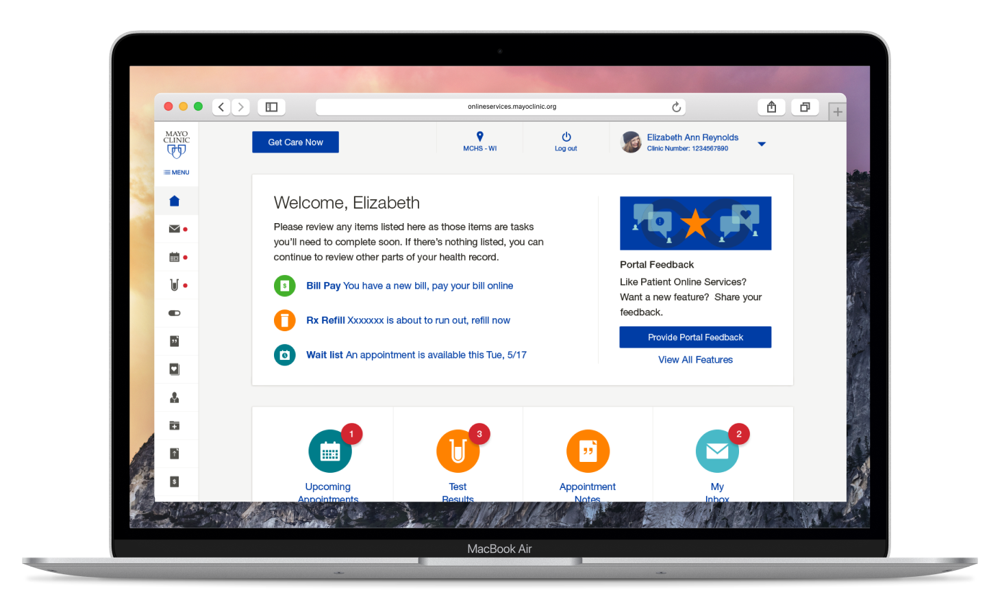
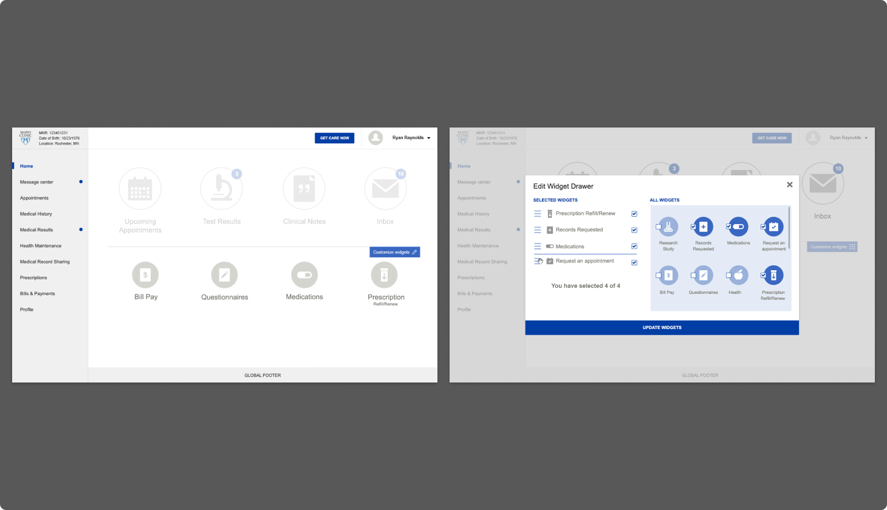
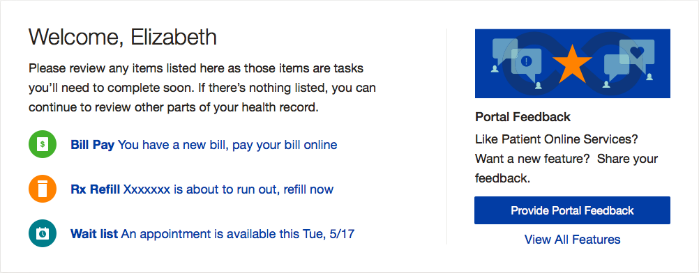
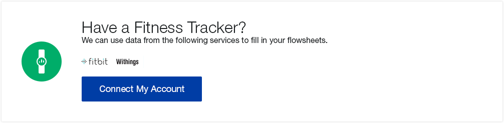
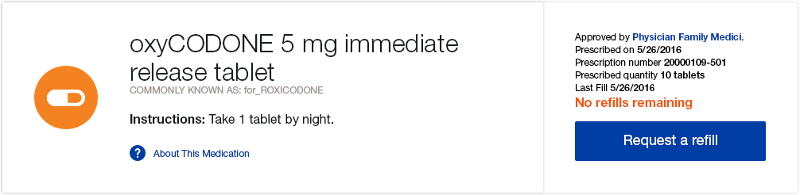
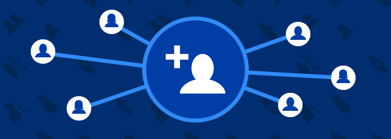
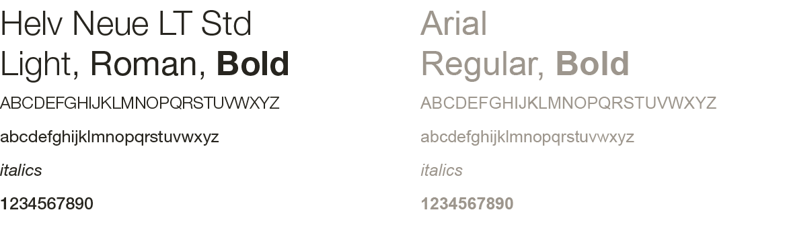
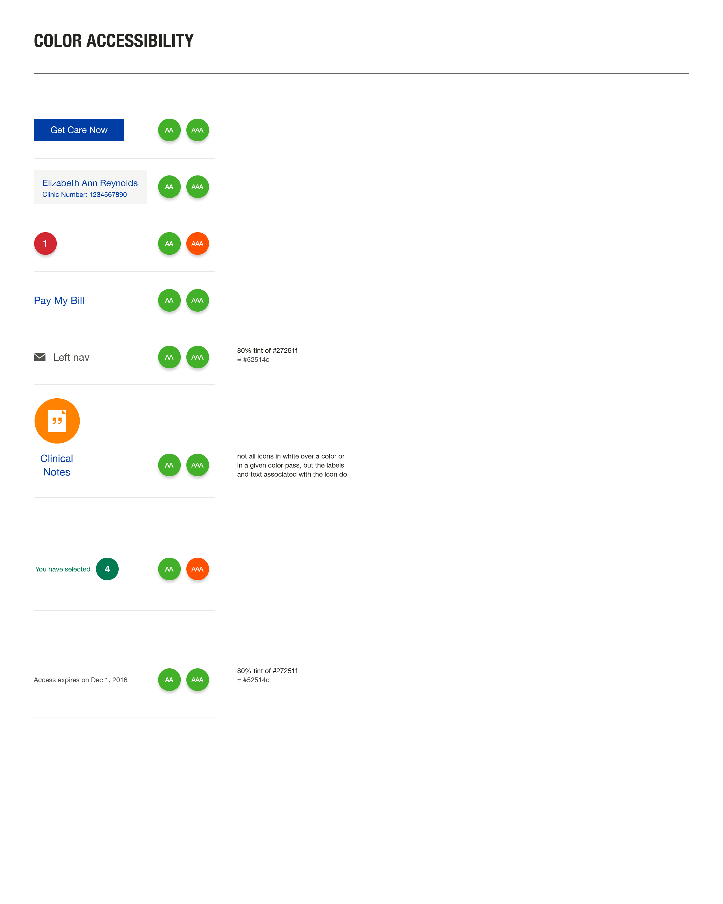
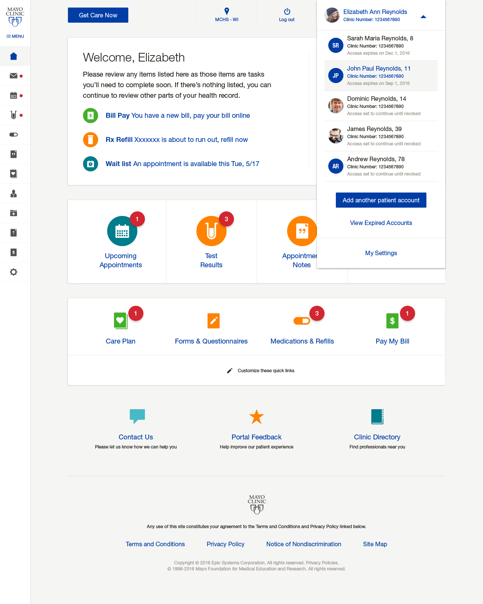

Patient Online Services lets you see your medical records and results, manage appointments, review your clinical notes, use Mayo Clinic Express Care Online and more.

On the project early stages we made a lot of meetings and generated hundreds of wireframes.

On the main card of the Homepage, the feature on the right will change depending on the particular situation of the patient, e.g.: If the patient has a Care Plan and this has been recently updated or if their payment is soon to be expired. On the left, the items of the list will change depending on what will need the patient's attention.

Other main card examples for My Care Plan and Medication & Refill sections


Here are some of the proposed illustrations that will be shown on the right side of the main card on the landing page.

We also worked on some of the icons, following Mayo's Design Guidelines.
In accordance with health literacy best practices, each color, contrast or border was tested to guarantee accessibility and fonts used are simple and familiar to enhance readability.
Regardless of the user's age or condition, they will have the clearest and easiest experience possible.


At that time, one of the most complicated functionalities that we came up with — maybe not only in design but in code as well — was the caregiver/caretaker permissions and how to add and remove different roles to the users (e.g. a middle-aged person who has to take care of their dad).

Personally, this project was one of the most satisfying projects of my career, even if it wasn't the most eye-appealing project. Not only because it was health related, but because what Mayo Clinic represents, their commitment to cancer research and the most important thing, the lovely people that I've worked with.